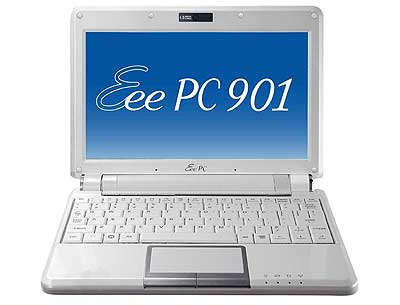

|
|
|
Sponsored Link •
|
Summary
Recently I have received a wonderful EeePC as a wedding present and I am very happy with it.
|
Advertisement
|
I wished for an EeePC since the 8.9 inches models came out a few months ago, because I needed to buy a laptop for my wife. I was tired of helping her with Windows issues and I wished for a Linux laptop working out of the box and not intended for Linux-savvy users. The EeePC seemed an ideal choice, also because of its dimensions and weight (my wife wanted something small).
Actually, 8.9 inches seemed too small to me, so I was waiting for the new 10.2 inches model. When I got the money as a present, I spent a couple of days googling, but I could not find a Linux model with the 10.2'' display here in Italy. I hope this is just accidental and that Asus will keep offering Linux even for the new and bigger models.
As I have mentioned elsewhere, I am really tired of buying laptops just to wipe out their operating system: for the first time the EeePC allowed me to buy a Linux laptop and I wanted to take full advantage of this opportunity. So I bought the 8.9 inches model, the EeePC 901. In theory it should be available in many colors (I wanted it pink) but in practice in Italy you have the choice between black and white (I have got the white).
Since the main user of this machine is my wife, I do not plan to install anything nontrivial on it, and I would be happy to keep the default Xandros distribution if it works fine. I have seen many advanced users criticizing Xandros, and probably they are right - if I was the main user, I would probably install Ubuntu since it is my main operating system at work - but it must say that it is really easy to use for computer illiterate people.
I bought the machine, I installed the battery without looking at the manual, I powered it on, and in seconds I was already surfing the Net with my wireless network. It was the first time in my life I had a similar experience with a Linux machine, and it was really heart warming ;)
Today I tried to connect to a traditional LAN at my parents' home, and it also worked perfectly well at the first attempt without requiring any configuration at all. Audio, video, recognition of USB devices and an external monitor worked out of the box (actually I had to run a setup script to view certain .avi files, but the script was already installed on my machine and it was easy to find its existence with a bit of googling) and this is also something I was not used too.
There is a set of very nice applications bundled with the netbook: in particular the StarOffice productivity suite. My wife has the need of a Word-like editor and she was happy with the StarOffice one.
There is a self-update system provided by Xandros, which however does not look to be working perfectly well (it seems it cannot install some upgrades by Xandros itself ?) however I do not care much about that for the moment: we will see if it becomes a problem. The first day I used it, a couple of times the system became irresponsive and I had to reboot it, but now it seems to work fine. The media player is very fluid and the audio pretty much decent for a machine this size and price.
The things that worried me the most before bying the EeePC were the screen size and the keyboard size. The screen is very bright and readable: however it is tiring to look at it for many hours, so I will recommend my wife to connect thee EeePC to our external monitor if she has a lot of work to do. Incidentally, whereas the resolution of the display is 1024x600, the EeePC also supports a more tradititional 1024x768 resolution when connected to an external monitor, which is just fine for me since I have a 4:3 monitor.
The keyboard is very small and at the beginning it was difficult to write with it: I must say however that after a few hours of typing I am becoming proficient with it. My wife has smaller hands than me and is perfectly happy with the keyboard. Actually, In this moment I am writing these notes on the EeePC while we are in train, coming back home.
Still, I think a bigger keyboard would be a nice thing to have. For this reason I have wondered a lot about buying a 904H model, which has a larger keyboard (but a display of the same size): this model is available with Linux, has a 160 GB traditional hard disk it is also much cheaper than the 901. Still, at the end, I decided to buy the 901, which features an Atom processor and 7+ hours battery life. For my wife and me battery life is extremely important; moreover she wanted a very light machine and the 901 model weights 1.1 Kg, whereas the 904 model weights 1.45 Kg. The 901 is also smaller and fits in her small bag: for a men that may be less important.
I was not sure about the solid state disk vs the traditional hard disk: at the same price the difference is between 20 GB of space vs 160GB of space, so initially I thought a traditional hard would have been a better choice. However, now that I have EeePC in hand I have changed my mind: the machine is so light that it is very easy to drop it accidentally. I feel much better having a safer solid state disk. Moreover, I have already a couple of external hard disks, so disk real estate is not an issue for me.
I have discovered now that the EeePC came with a free 20GB storage area on the web !
A very welcome surprise indeed. That means that I can keep a backup copy of all my documents there, which is very important, especially for my wife. I have not seen a backup utility yet, but I assume it is there somewhere or that it will be available soon. I can also put there family videos, since there is a generous limit of 200 MB per file. This is definitely a significant plus. It must be a very recent addition, since it was not advertised in Italy.
How fast is the EeePC? I did some experiment by executing the pystone benchmark, which is used to test the performance of Python on various system (the EeePC comes with Python preinstalled, both in the 2.4 version and in the 2.5 version, a very welcome surprise for a long time Pythonista like myself).
The EeePC 901 has actually four available performance modes: power saving (the slower mode), high performance and auto high performance (it is not clear to me what the difference is between these two) and super performance (the fastest mode). You can switch between modes very easily by pressing a hot key. I compared the performance against my 18 months old MacBook, which performs at 50,000 pystones/second (the higher the number, the better).
In the power saving mode the EeePC performs at 14,000 pystones/second (4 times slower than the MacBook), in the high performance mode at 18,000 pystones/second (3 times slower) whereas in the super performance mode performs at 20,000 pystones/second (2.5 times slower). It seems to me a decent result for a machine which was not designed for speed.
Still, I must say that sound and video are perfectly fluid and nice on the EeePC, so you do not see much of the performance hit. What you notice is a longer startup time of the applications. For instance, you have to wait a couple of seconds to see the media player pop up.
Yesterday I tried to make a phone call with Skype (the EeePC comes with Skype pre-installed and pre-configured: there is even a hot key to call it directly!). No surprises there: it worked at the first attempt, without issues. However I must say that the video looked less fluid and less bright than on my MacBook: I must try another time with a better connection and with a better lightning to be sure.
Today I had the problem of running a Windows program on the EeePC: I googled on the Italians EeePC forums, found out the recipe to download Wine (it was enough to add a couple of Debian sources to the /etc/apt/sources.list), I installed it and the program runs just fine: excelsior!
There is just one thing that does not work: if I connect my digital camera to the EeePC, it is not recognized and nothing happens. It is strange since I expected to see the camera as an external device and I have checked that USB pens and disks are recognized without problems by the EeePC. Moreover the camera works, I can transfer my pictures to any other box, including Linux boxes. I must investigate what it is happening, but I haven't got the time yet.
All in all, I am pretty happy with the EeePC, which is pretty good for its intended usage. On the other hand, it cannot replace a developer laptop yet. By comparing the 8.9 inches of the EeePC with the 13.3 inches of the MacBook, I think that I would need a display of at least 11-12 inches to work confortably, and a correspondly large keyboard. I mean, the 901 keyboard is perfectly fine and responsive, but it is just too small for my hands. For what concerns the weight, I think 1.5 Kg would be reasonable.
As of now, the largest Eeepc model has a 10.2 inches display, but I am pretty sure than soon or later they will launch a bigger model. Then, I would consider it as a possible replacement for a regular laptop. Notice that I don't play video games, nor I am interested in video editing or any other CPU intensive task, nor I use Eclipse, so the performance is a non-issue for me. For me, Linux is the selling point. Moreover, there is very large and growing community of enthusiastic EeePC users out there, and this is important too. It is the reason why I have not considered netbooks from other vendors, which are newcomers in this game.
Post Scriptum: I have no connections with Asus and this recension was completely spontaneous. On the other hand, if somebody at Asus is reading this and wants me to review some other model, I will accept a gift ;)
Have an opinion? Readers have already posted 2 comments about this weblog entry. Why not add yours?
If you'd like to be notified whenever Michele Simionato adds a new entry to his weblog, subscribe to his RSS feed.
 | Michele Simionato started his career as a Theoretical Physicist, working in Italy, France and the U.S. He turned to programming in 2003; since then he has been working professionally as a Python developer and now he lives in Milan, Italy. Michele is well known in the Python community for his posts in the newsgroup(s), his articles and his Open Source libraries and recipes. His interests include object oriented programming, functional programming, and in general programming metodologies that enable us to manage the complexity of modern software developement. |
|
Sponsored Links
|